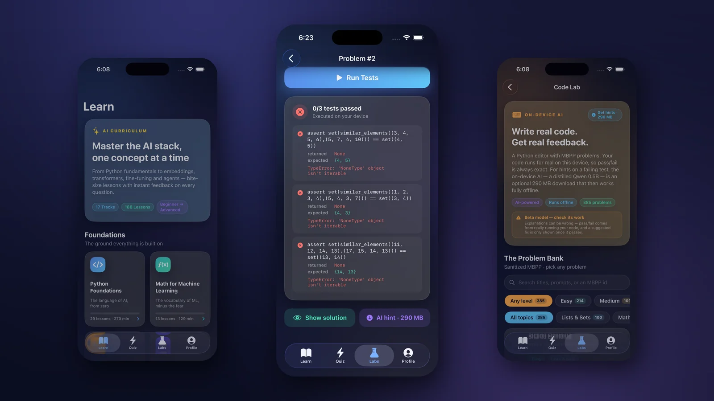
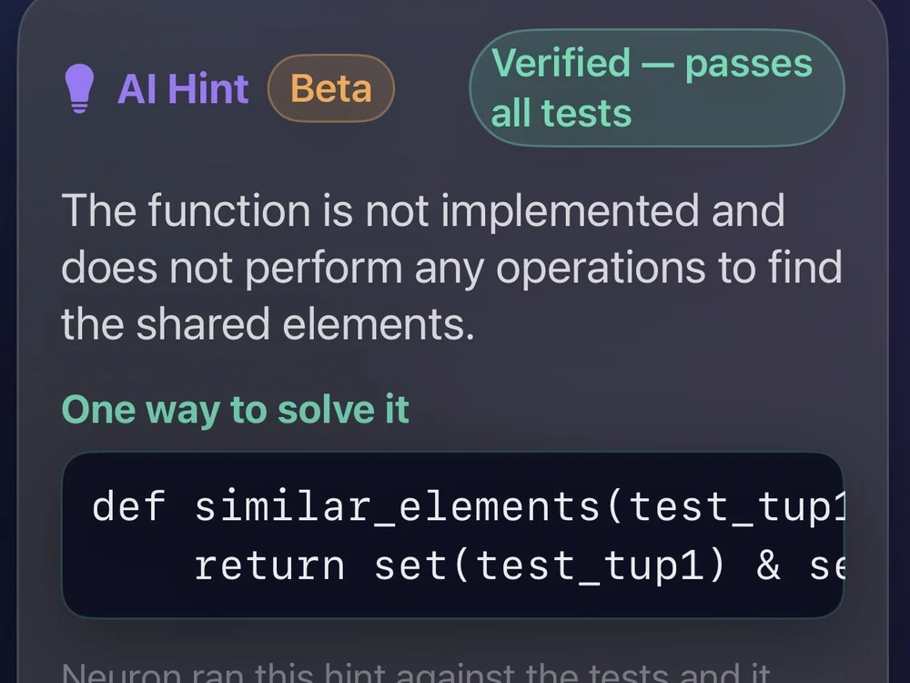
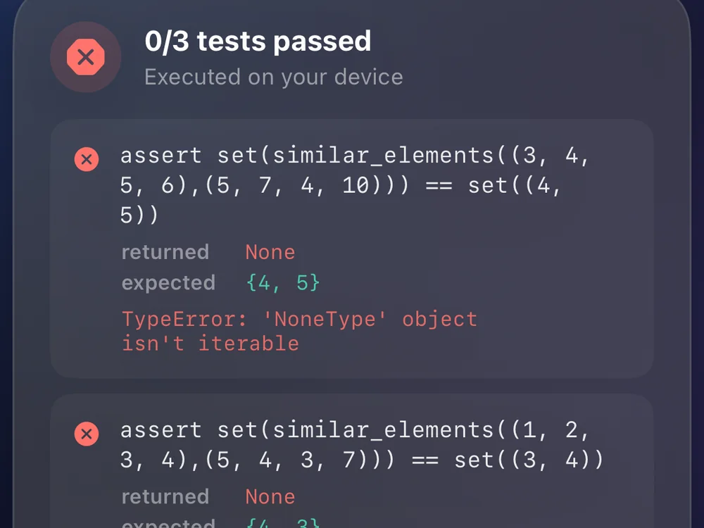
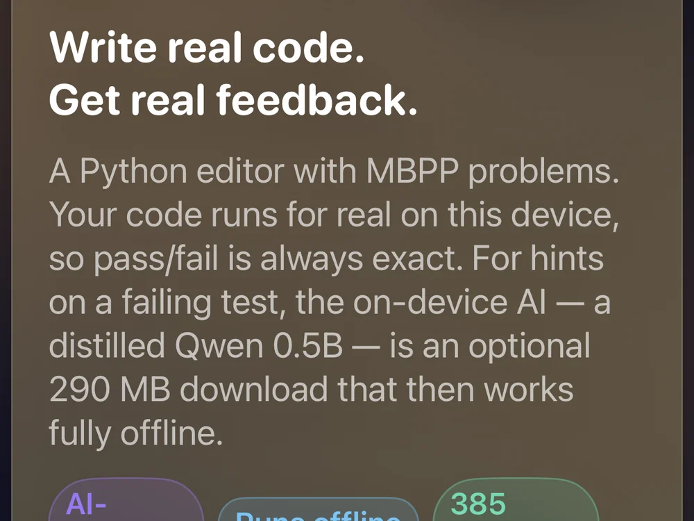
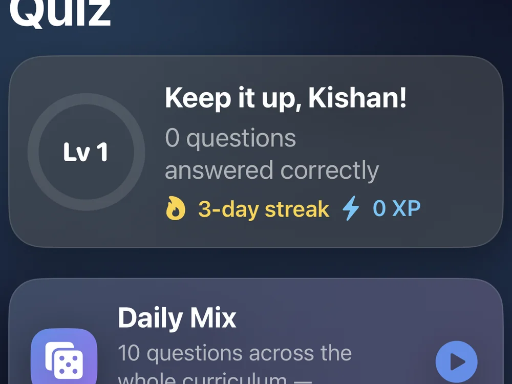

Personal project on LoRA, knowledge distillation and on-edge inference with open-source LLMs
Learn the modern AI stack and practise Python entirely on your iPhone — no account, no server, no network.
Built with SwiftUI, WebAssembly, MicroPython, MLX, and a distilled 0.5B coding model that runs locally.

Forty-one seconds, recorded on a physical iPhone: real Python executing on the device, a failing test explained, and an AI-suggested fix verified against the test suite before it is shown.
This is not a chat window in front of an API. Every claim the app makes about a learner's code is grounded in actually executing it.
MicroPython compiled to WebAssembly executes learner submissions locally, inside a sandboxed web-content process. Nothing is uploaded, and it works in aeroplane mode.
Submissions are judged by running executable assertions, so pass/fail is exact.
A failed assert is dissected to report what the function returned versus
what was expected — the one thing a plain AssertionError hides.
An optional 290 MB 4-bit Qwen2.5-Coder, distilled from a 32B teacher and run through MLX on the Neural Engine. The learner's code never leaves the phone.
The model drafts a repair; the app runs that repair against the real tests and only displays it if it passes. When nothing passes, the app says so rather than presenting broken code as an answer.
There is no server component. The only network request the app ever makes is the one-time model download, and the app is fully usable without it.
┌──────────────────────────────┐
│ SwiftUI (iOS) │
│ lessons · quizzes · editor │
└───────┬──────────────┬───────┘
│ │
submitted code ─────┘ └───── code + failure
│ │
┌─────────────────▼──────────┐ ┌───────────▼───────────────┐
│ WKWebView (own process) │ │ MLX · on device │
│ ┌──────────────────────┐ │ │ ┌─────────────────────┐ │
│ │ MicroPython → WASM │ │ │ │ Qwen2.5-Coder-0.5B │ │
│ │ sandboxed · 8s limit │ │ │ │ 4-bit · 290 MB │ │
│ └──────────────────────┘ │ │ └─────────┬───────────┘ │
└─────────────┬──────────────┘ └────────────┼──────────────┘
│ │
pass / fail + values candidate repair
│ │
└───────────► VERIFY ◄────────┘
│
run the repair against the same
tests — show it only if it passes
A model small enough to ship inside an app, trained to do one narrow job: look at a failing Python submission and explain what went wrong.
| Stage | Detail |
|---|---|
| Teacher | Qwen2.5-Coder-32B-Instruct (Apache-2.0) |
| Student | Qwen2.5-Coder-0.5B-Instruct (Apache-2.0) |
| Method | Black-box knowledge distillation — supervised fine-tuning on teacher-generated critiques, via a LoRA adapter, then merged |
| Training data | 1,608 candidate solutions across 420 MBPP problems, each paired with the interpreter's real verdict |
| Label quality | 0 verdict/execution mismatches in 282 sampled examples |
| Deployment | Merged → quantised to 4-bit → exported to MLX |
A single sample repairs a broken solution about 37% of the time, measured over 517 held-out MBPP candidates built as one-token mutations of correct code. Real learner code is much further from correct, and the rate on it is considerably lower. The number that moved most was not model size but grounding: handing the model the interpreter's actual failure — rather than asking it to judge correctness itself — lifted the verified repair rate from 5.0% to 12.5%.
That gap is the reason the product verifies before it displays. A 0.5B model is not reliable enough to be trusted on its word, so it is never asked to be — the interpreter is the authority, and the model is only ever an explainer.
Captured from the shipping build on a physical iPhone.




I designed and implemented the entire project: the SwiftUI application and its design
system, the WebAssembly execution environment and its sandboxing, the assert-dissection
pipeline that turns a bare AssertionError into returned-vs-expected feedback,
the curriculum, the model-distillation workflow, quantisation, and the on-device inference
integration — including the verification loop that runs generated fixes against the real
test suite before showing them.